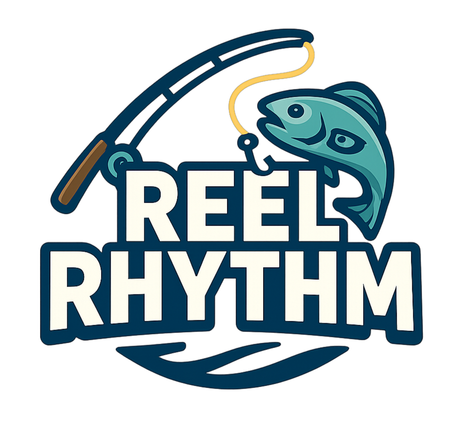

Rhythm Fishing
Cast your line and time inputs to the beat. Fish tug and fight in sync with the music — hit notes with precision to tighten the line, build combos, and reel in rare catches.
Game Development
Play as Jordy, an aspiring angler who follows a brochure's promise of paradise only to find a polluted island. Through rhythm-based fishing and deliberate cleanup, collect fish, restore habitats, and uncover how pollution affects aquatic life.

Gameplay
Cast your line and time inputs to the beat. Fish tug and fight in sync with the music — hit notes with precision to tighten the line, build combos, and reel in rare catches.
Pick up debris scattered across the shoreline to restore the coastline. Collect enough trash to unlock new fishing areas and habitats to explore.
Track fish rarities in your compendium, sell catches for money, and buy better lures to increase your odds of landing rare and valuable fish.
Screenshots
Controls